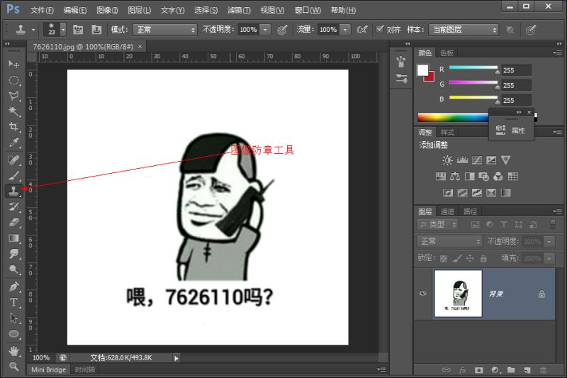
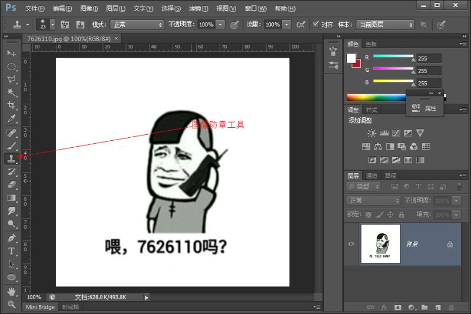

是否感觉自己的表情包不够用呢？来我们一起来制作自己的表情包吧。
是否感觉自己的表情包不够用呢？来我们一起来制作自己的表情包吧。
点选图像防章工具，然后用按住Alt键，点选图片的空白处，松开，这时候你就可以按住鼠标左键拖动你的鼠标去除你想要去除的东西啦（也可以用于处理眼部的血丝啊这些细节哦）。
此时点选文字工具，在你想要输入的地方输入文字就行啦。
此时选择矩形选框工具，把文字画进框内，注意别手滑，滑到图片上了哦。
此时点击滤镜，模糊，高斯模糊，此时ps会要求你格栅化，格栅化就行，我们再重复一遍操作，点击滤镜，模糊，高斯模糊，选择你需要模糊的像素，此时我们的作品就大功告成啦。
是不是很简单呢（不是），快来试试吧。